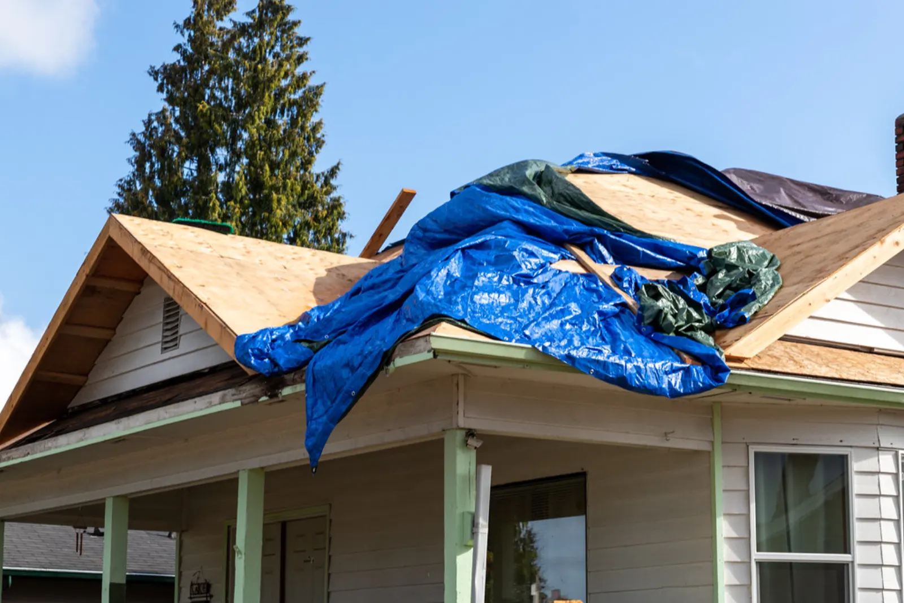

Independent Claim Evidence
Fair claims start with indisputable evidence.
Insurance claims are frequently delayed or under-scoped because homeowners lack professional photo documentation. We bridge the gap between your damaged roof and your insurer's assessment requirements.
- Comprehensive Photo Dossiers: Macro and panoramic images documenting severe weather impact across every roof pitch.
- Itemised Scope of Works: Line-by-line breakdown adhering to National Construction Code (NCC) and Australian Standards.
- Claims Approved Partnership: Independent specialists guiding you through claim communication and assessor meetings.
- End-to-End Delivery: When your claim is approved, our licensed trades deliver the restoration with full QBCC compliance.